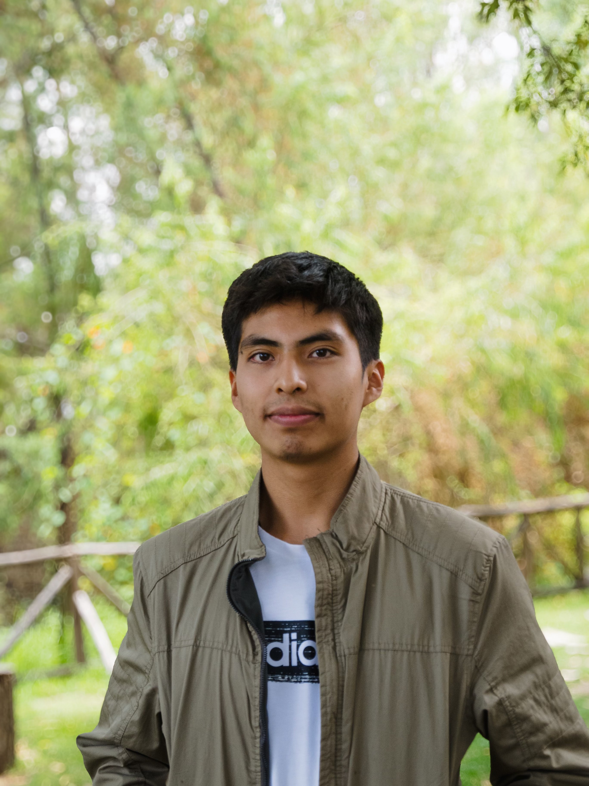

Born in Arequipa, Peru
Computer Science at UCSP / Software Developer
Software, From Core to Interface
I am Iván Matthías Sardón Medina, a developer from Arequipa, Peru focused on engineering depth, practical products, and the full path from data structures and networking to web and mobile experiences.

Current focus
Systems + product software
Databases, networking, UNIX tooling, mobile apps, web interfaces, and AI-assisted applications.
Computer Science student since March 2023
NASA Space Apps global finalist with AyniTech
Expertise spectrum
One engineering mindset across very different application layers.
My work connects low-level implementation details with user-facing products: storage logic, indexing, sockets, command-line tools, backend architecture, web interfaces, mobile apps, and AI integration.
Systems
C, C++, memory, data structures, files, indexing, and performance-oriented programming.
Networking & UNIX
TCP/IP, sockets, Linux workflows, CLI tools, parsing, and automation-friendly utilities.
Backend & Data
Database concepts, scalable architecture, Firebase, MongoDB, MySQL, and API connectivity.
Web & Mobile
TypeScript, React, Next.js, Flutter, Swift, responsive UI, and production-oriented app design.
C++
C
TypeScript
JavaScript
Dart
Swift
Python
Java
React
Next.js
Node.js
Flutter
Firebase
Docker
Linux
Git
Featured projects
Selected work that shows range, not just one stack.
These projects are organized by the engineering capability they demonstrate, from database internals to mobile products and challenge-driven applications.
Database internals
01
Custom Database Engine in C++
Designed and implemented a storage simulation system focused on sparse and dense indexing, AVL-tree based indexing, bulk insertion from text files, and physical storage calculations.
C++
Data Structures
Indexing
File Systems
Networking
02
TCP Scanner
Socket-based network tooling project covering TCP communication, port scanning workflows, concurrent operations, and low-level analysis concepts.
C++
TCP/IP
Sockets
UNIX tooling
03
UNIX Log Parser
CLI-oriented utility for structured log parsing, pattern extraction, UNIX workflow integration, and efficient text processing.
C++
Linux
Parsing
Mobile product
04
Flutter Inventory & Work Order System
Business-oriented mobile app with real-time product search, Firestore multi-filter querying, dynamic PDF generation, inventory workflows, and responsive Flutter UI.
Flutter
Firebase
Firestore
PDF
NASA Space Apps
05
RUNApp / AyniTech
Educational Flutter app built for the EMIT for the Future challenge, using NASA mission data to explain health, community, and environmental impact in five Peruvian cities.
Dart
Flutter
NASA Data
iOS + web
06
Digital Clock & Web Projects
Swift-based landscape iOS clock application distributed through TestFlight, plus responsive web applications using component-based architecture and API integration.
Swift
iOS
React
Next.js
Foundations
Early projects that shaped the base.
Lord Basilisk
Action RPG final group project that achieved the highest grade possible in the course history.
Santillana Sales Dashboard
C++ OOP dashboard using dynamic memory allocation, inheritance, and polymorphism.
Classic C++ Games
Snake and Tic Tac Toe console programs built as an introduction to C++ syntax and logic.
About
Curiosity, technical discipline, and creative range.
I was born in Arequipa, Peru in 2005. In school, Mathematics, Computer Science, and English became early strengths, and after exploring engineering I found Computer Science at Universidad Católica San Pablo.
I began studying Computer Science in March 2023. Since then, I have focused on strong academic performance while learning beyond coursework through talks, congresses, hackathons, and projects that force me to understand software at different levels.
Outside software, I play piano, draw and paint across several media, train consistently, and enjoy volleyball and taekwondo. That creative side matters to my engineering work: I care about building products that are technically solid, usable, and thoughtfully designed.
Contact
Let's build something technically solid and genuinely useful.
I am open to software projects, engineering collaboration, and conversations around systems, web, mobile, databases, networking, and applied product work.